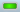
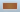
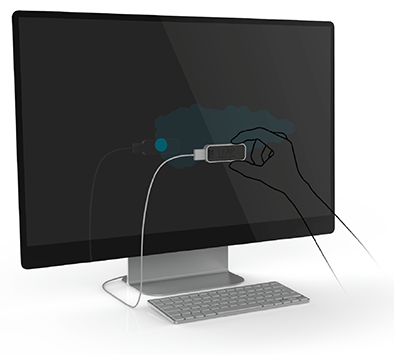

Leap Motion Settings
This article describes the Leap Motion Control Panel, which you use to set the available options for your Leap Motion Controller.
Overview
When the Leap Motion menu bar application is running, it displays an icon in Mac Finder bar.
When a Leap Motion device is plugged in and working properly, the icon turns green.
Other colors indicate errors and abnormal operating conditions:
 — the Leap Motion controller is unplugged (or the Leap application hasn’t detected it yet).
— the Leap Motion controller is unplugged (or the Leap application hasn’t detected it yet).-  — the Leap Motion controller and application are operating normally.
 — the Leap Motion controller is operating in robust mode. See Operating Modes_ for more information.
— the Leap Motion controller is operating in robust mode. See Operating Modes_ for more information.-  — shown briefly, this icon indicates that a smudge or other contamination might be clouding the Leap Motion Controller sensor window.
 — an error has occured from which the Leap application is unable to recover. Open the application log using the
— an error has occured from which the Leap application is unable to recover. Open the application log using the Show Logmenu command for more information about the error.
The Leap Motion application icon menu provides the following commands:
- Launch Airspace — Opens the Airspace application.
- Settings… — Opens the Leap Motion Control Panel.
- Visualizer… — Launches the Visualizer application.
- Pause/Resume Tracking — Stops/Resumes the production of Leap Motion tracking data.
- Quit — Exits the control panel application, removing the icon from the menu bar. Leap Motion tracking data remains available from the Leap Motiondaemon.
Leap Motion Settings
You can adjust the behavior of the Leap Motion system and perform diagnostic checks using the Leap Motion Control Panel.
General settings
The General page of the Leap Motion Control Panel provides the following settings:
Check the Allow Web Apps checkbox to turn on the WebSocket server that provides tracking data to web applications. (It is possible for other applications to connect to the WebSocket server, so turning this setting off could affect a few desktop applications as well.)
Check Allow Background Apps to permit applications to receive tracking data when they are not the foreground, focused application.
Check Automatic Power Saving to allow the Leap Motion software to reduce power usage by adjusting the tracking frame rate based on the amount of movement in the field of view. Power saving is always used when a computer is running on battery power.
Check Automatic Interaction Height to allow the Leap Motion software to adjust the height of the interaction box automatically. This setting affects the InteractionBox class provided by the Leap Motion API. Adjust the Interaction Height slider to manually set the interaction box height.
Check Automatically Check for Updates to allow the Leap Motion software to automatically check for and download software updates on a regular interval. Click the Check for Updates button to check immediately. Click Install Update when an update is available.
Tracking settings
The Leap Motion system has several operating modes which determine how the system analyzes data. The following modes are user-selectable from the Control panel of the Leap Motion application:
Tracking Priority:
- Precision — prioritizes precision over speed
- Balanced — balances precision with speed
- High Speed — prioritizes speed over precision
Check Auto Orient Device to allow the device to flip the z axis when it detects a hand entering the field of view from the opposite side. Click the Reverse Orientation button to flip the axis manually.
Robust tracking mode
The Leap Motion Controller automatically drops into robust mode when lighting conditions become poor. The Leap Motion switches back into the last user-selected operating mode when lighting conditions improve, but will remain in robust mode for at least 30 seconds. The Leap Motion task bar or menu bar icon changes from green to yellow when in this mode. While in robust mode, the other tracking modes cannot be selected.
The Robust Mode improves the reliability of the tracking data in bright lighting conditions. Robust mode allows the Leap Motion Controller to operate in a wider range of environmental conditions; however, other performance characteristics may be reduced. The main effects on performance are that there will be increased processing latency and very fast motions by the user will cause a loss of tracking data.
Troubleshooting
Click Show Software Log to view events related to the Leap Motion application. If you are having problems, we may ask you to save the log and send it to Leap Motion_ to help us assess the problem. You can save the log by copying the contents of the log window to an email or text document.
Click Diagnostic Visualizer to open the developer Visualizer application.
Click Recalibrate Device to start the device calibration utility. See Device recalibration for information.
Click Report Bug to open the bug report form. See Reporting bugs for information.
Click Restore Default Settings to revert all of the Leap Motion settings to their original values.
Check the Low Resource Mode checkbox to reduce the CPU and USB bandwidth used by the Leap Motion device and software. This setting reduces maximum tracking range, speed, and accuracy, but may be necessary on computers with congested USB busses (from multiple USB and Bluetooth devices) or lower-rated CPU chips.
Click Run Diagnostics to perform a series of system and environmental tests.
Diagnostics
The Diagnostic tests include two sets of checks. The first set tests the Leap Motion device and software:
- Authentication — validates the controller firmware identity. If this test fails, please contact Leap Motion support.
- Device Test — checks that the controller can send data to the Leap Motion software.
- Check USB Bandwidth — checks that the USB bus has sufficient bandwidth.
- Software Test — checks that the Leap Motion software produces tracking data (this test an object in view during the test).
The second set of checks tests external environmental factors:
- Check for smudge — checks the device window for dirt and smudges. If this test fails, clean the device window with a soft cloth.
- Check lighting conditions — checks for bright infrared light sources in the Leap Motion controller’s field of view. If this tests fails, consider moving controller or the light source, if possible, or shielding the controller from the light source.
Click Report Diagnostics to send a report containing the test results to Leap Motion. We use the information for quality control.
Device recalibration
If the sensors on the Leap device are knocked out of their initial
alignment, the device must be recalibrated. Symptoms that may indicate
the need to recalibrate include:
- Persistent jumpiness
- Frequent discontinuities in the tracking data
- Aberrations in tracking data that occur only in certain areas of
the field of view- Poor tracking range
You can look for these symptoms using the Leap
Visualizer.
To recalibrate your Leap device:
- Open the Leap Motion Settins application using the icon menu on the Windows Taskbar or Mac Finder bar.
- Select the Troubleshooting page.
- Click the Recalibrate Device button.
Follow the on-screen instructions to perform the calibration procedure.

You will need a flat, reflective surface. A mirror is ideal, but many
other reflective surfaces like a flat screen monitor will work accetably
as well. During the procedure, hold the Leap so that the LEDs shine on
the reflective surface and are reflected back into the top of the
device. The calibration window displays a disk that moves as you change
the angle between the surface and the device. Rotate the Leap to move
this disc so that it “paints” the window. Moving the Leap up and down or
side to side does not adversely affect the calibration, but calibration
requires rotation.
Reporting bugs
If you are having problems with the Leap software, please contact us so
we can help you resolve the issue. You can submit reports on the ~!@Leap
Motion@!~ Developer Portal or by using
the Bug Report form of the Leap Application.
We may ask you to reproduce the issue on your device and record some
diagnostic information which you can send to ~!@Leap
Motion@!~ to help us assess the problem.
You can start and stop the recording of diagnostic information from the
Leap Bug Report form. The data is compressed and encrypted and is not
useful for your local application debugging. The data recorded can grow
large over time, so we do not recommend recording diagnostics for an
extended period.
To report a bug,
- Open the Leap Motion Settins application using the icon menu on the Windows Taskbar or Mac Finder bar.
- Select the Troubleshooting page.
- Click the Report Bug button.
- On the Bug Report form, select the reason that best fits your bug
from the Reason drop-down list. - Add any important details, such as how to reproduce your bug in the
Details section. - For some types of bugs, you will be asked to record diagnostic
information. - When finished, click the Send button. Your bug information and
recorded diagnostics will be sent to Leap Motion.
If you are asked to record diagnostic information,
- Press the Record button.
- Reproduce the problem (it may help to have the Leap
Visualizer running). - Press the Stop button after a short period of time.
- Click Send to upload the diagnostic file to ~!@Leap
Motion@!~ for analysis.